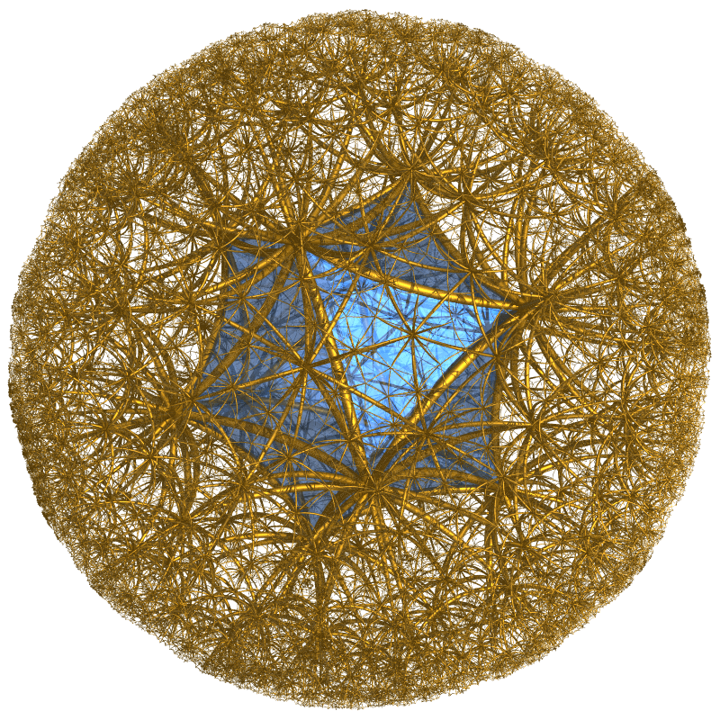
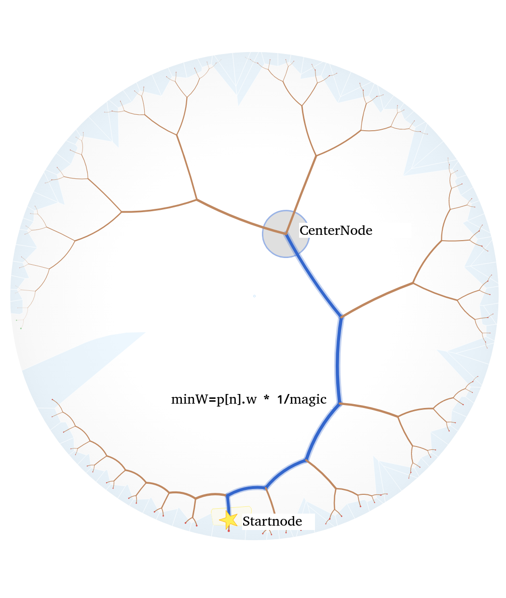
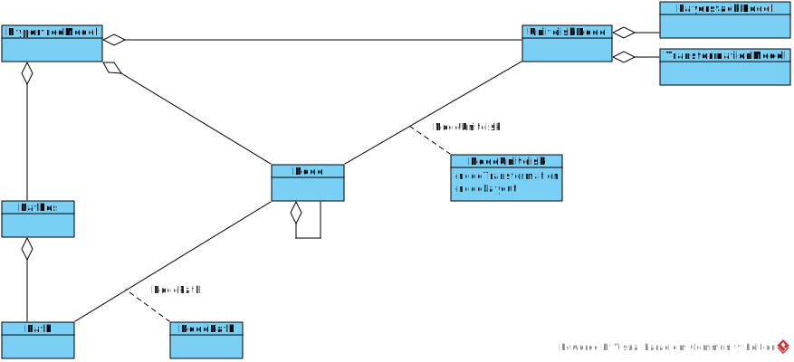
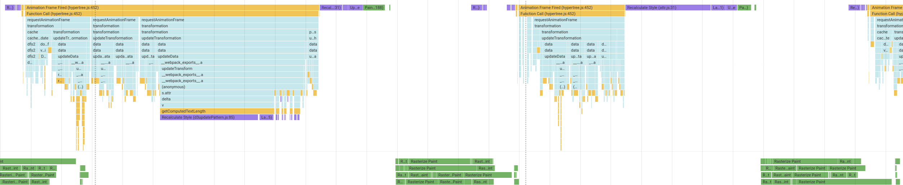
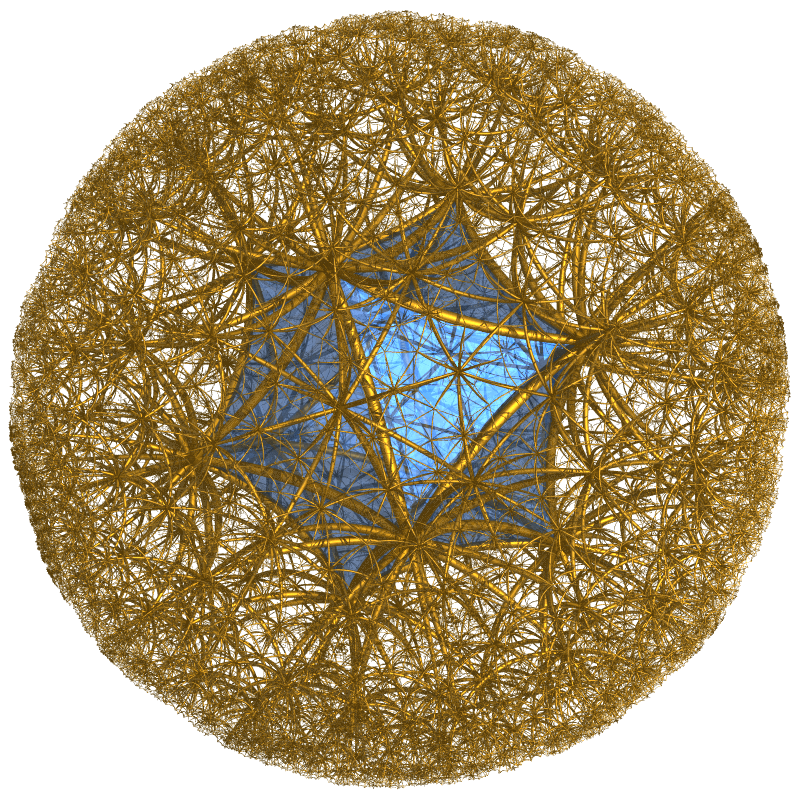
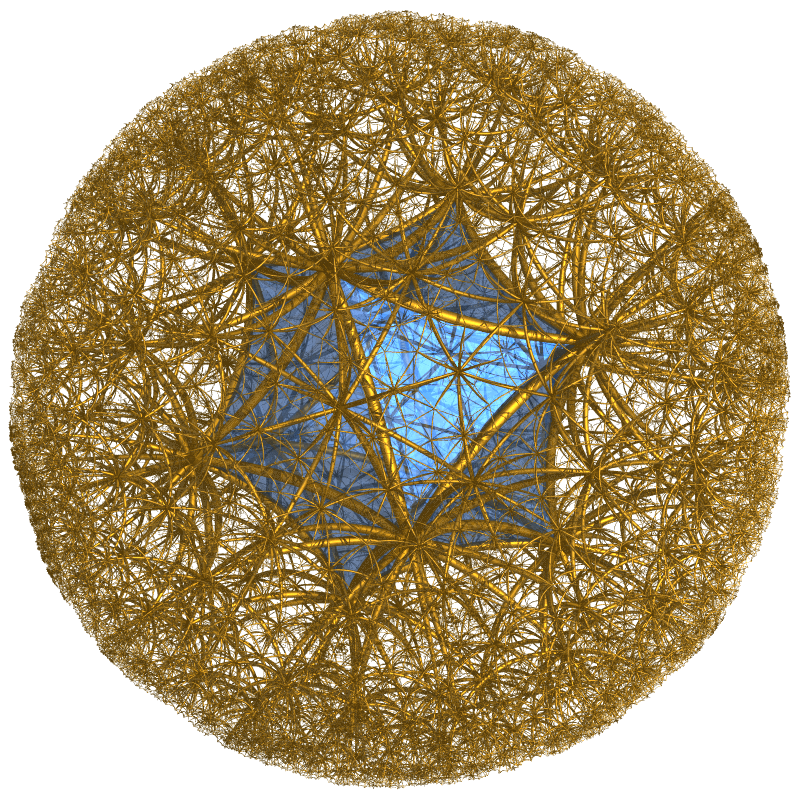

Layerstack 'tranformZ hack' important for performance
ViewModel Hypertree
SVG Limit (λ ~.1, no Weight Filter)
SVG/D3 limits to 1000 Nodes
But we dont need more since humans perfere less information.
If SVG should be used elements must be removed.
Layout and transformation is applied to subset of hierarchy.
How to determin this subset?
Perimeter Culling

ViewModel Hypertree
Perimeter Culling working (λ ~1)
Perimeter Culling NOT working (λ ~.1)
full tree small λ
Weight Culling (Semantic Filtering depends on Dataset)

Weight Culling working
Weight Culling ~working (Number of Nodes limited, User disorientated)
Label Areas
Interaction Traces
Pathes
Finally
ViewModel Hypertree
UML Diagramm Visualisation Model

Evaluation
Chrome Performance

Summary
Focused view (l>.5): Perimeter culling sufficient if average degree < 5 Over view (l<.5): Performs only if semantic filtering like weight culling is applied
Semantic filtering must be adapted for each dataset, if overview is required.
Build System (How to Develop)
gulp is a Javascript based build tool
Pipes and Filters pattern implementation, with glob selectors
Alternatively Promise based Tasks
Watches filesystem, starts builds and synchronises Browser


 
